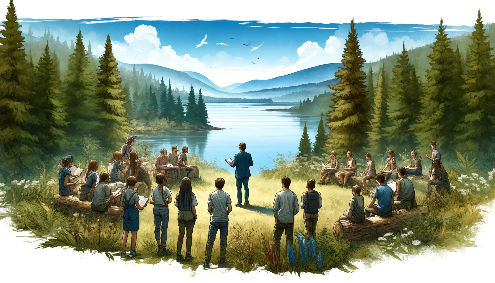

Studien- und Prüfungsleistung
Die Entwicklung und Durchführung einer außerschulischen Lerneinheit findet in Kleingruppen von 2-3 Studierenden statt. Die Zuteilung in Gruppen erfolgt durch die Kursleitung. Jedes Gruppenmitglied ist für einen definierten Teilbereich innerhalb des Rahmenthemas für die Lernumgebung verantwortlich. Die Vergabe des Teilbereichs erfolgt gruppenintern und ist daher nicht zwingend kenntlich zu machen.
Studienleistung
Die Studienleistung besteht aus:
- der Vorstellung der Konzeption der eigenen außerschulischen Lerneinheit,
- der Teilnahme an der Präsentation von mindestens 4 anderen AsLo-Terminen und Erstellung jeweils eines kritisch-reflexiven Reviews (Lerntagebuch) für diese 4 AsLos,
- der Durchführung des eigenen AsLo-Termin
Der Entwurf und Durchführung finden als Gruppenleistung statt, die Teilnahme an den anderen Konzeptpräsentationen und das Lerntagebuch sind individuell zu erbringen.
Abgaben
Während des Kurses werden verschiedene Übungen Konzeptentwicklung, -entwurf und Review (Studienleistung) zu bearbeiten sein. Diese Inhalte und Übungen des Theorie- und Praxisteils sollen Sie auf die Prüfungsaufgabe vorbereiten.
Abgaben zu den Übungen sind daher konsekutiv und zwingend fristgerecht bis zum Folgetermin im dafür vorgesehenen Bereich auf ILIAS hochzuladen.
Benotete Prüfungsleistung
Im Rahmen der Prüfungsleistung sollen Sie Ihren AsLo für einen Oberstufenkurs nutzbar machen. Dazu sollen Sie nicht die Durchführung Ihres AsLo im Rahmen des Seminars verschriftlichen, sondern den Lernort auf der Grundlage Ihrer Seminarerfahrungen für den schulischen Einsatz in der Oberstufe mit entsprechender Vor- und Nachbereitung konzipieren. Bitte bedenken Sie auch bei der Umsetzung für die Schule, dass es zu den Zielen von AsLo gehört, klare Bildungsziele für außerschulische Lernorte zu entwickeln, d.h. Ziele, die nicht ebenso gut oder besser im Klassenzimmer erreicht werden können, was zwingend die Fähigkeit erfordert, geeignete Lernorte zu identifizieren und die Lernenden zu aktivieren. Die Themenwahl sollte die eigenen Stärken und Interessen berücksichtigen.
Wir möchten dass Sie Ihren Beitragf als Markdown-Dokument einreichen (bitte im Ilias-Ordner). Sie können daraus ein nahezu beliebiges Dokumentformat erzeugen. Wir möchten Ihren Beitrag auf dieser Homepage veröffentlichen, um eine reale Nutzung für Marburger Lehrkräfte zu ermöglichen.
Der Praxisbeitrag
Der Praxisbeitrag soll die Lehrkräfte in die Lage versetzen, ihr AsLo-Konzept unter den gegebenen räumlichen Bedingungen möglichst reibungslos in die schulische Praxis umzusetzen. Er soll wie das Exposé die Motivation, die Fragestellung und die Ziele auf der Basis des aktuellen Forschungsstandes und der vor Ort vorhandenen Ressourcen darstellen. Die konkrete Umsetzung des außerschulischen Lernortes einschließlich der notwendigen Vor- und Nachbereitung ist für einen Oberstufenkurs zu konzipieren und mit unterstützenden Materialien zu versehen. Dazu sind die konkreten Lernorte in Marburg zu benennen und die Materialien an die örtlichen Gegebenheiten anzupassen. Digitale Materialien können verlinkt werden. Im Text sollte auf das Material verwiesen werden, um zu verdeutlichen, wie das Material eingesetzt werden soll. Achten Sie bei der Konzeption Ihres Lernortes auf eine angemessene Aktivierung der Schüler*innen.
Der gesamte Beitrag ohne Anhang soll ca 3.000 Wörter (+/-10%) umfassen und vollständige Literaturquellen enthalten. Aussagen müssen generell mit entsprechender Literatur belastbar belegt werden. Die Erfahrungen und Rückmeldungen aus den Übungen und der praktischen Erprobung sollen in die Erstellung des Beitrags einfließen. Der Beitrag muss eine Sachanalyse und eine didaktisch-methodische Analyse sowie die zu fördernden, zentralen Kompetenzen beinhalten. Der Anhang umfasst alle verwendeten Medien, sowie Screenshots digitaler Anwendungen und Lösungsvorschläge, die im Rahmen des Konzepts entwickelt wurden. Wenn gewünscht erfolgt die Bewertung als Gruppenleistung, andernfalls ist von jeder Person ein eigener vollständiger Artikel einzureichen. Wenn gewünscht erfolgt die Bewertung als Gruppenleistung, andernfalls ist von jeder Person ein eigener vollständiger Artikel einzureichen.
Ressourcen
Sie finden unter dem Menupunkt Ressourcen->Template eine Strukturvorlage für Ihre Arbeit. Unter dem Menupunkt Ressourcen->Quarto Markdown finden Sie technische Hilfe für die Erstellung von Markdown Dokumenten.
Pro Gruppe wird ein Beitrag abgegeben.
Der fertige Artikel ist als QMD-Dokument bis spätestens:: 30.09.2024 um 23:55 Uhr in den entsprechenden Abgabe-Ordner auf ILIAS hochzuladen und in folgender Form zu benennen:
Aslo_Name_Name_Name.pdf (Bsp.: Aslo_Hinz_Kunz_Meier.qmd
Genaue Arbeitsanweisungen zu den Übungsaufgaben finden Sie hier im Lernmodul.